#1 B01 host-1.jpg
Left: scene + script + script notes. Right: image + prompt + image notes. Tap an image to enlarge.
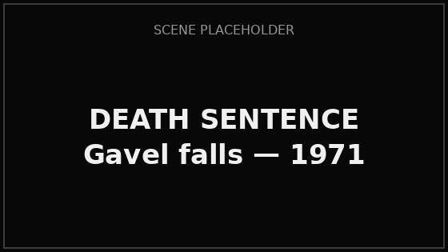
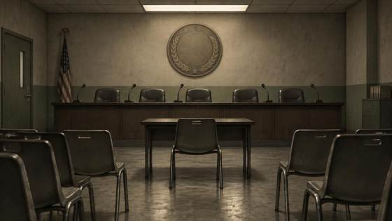
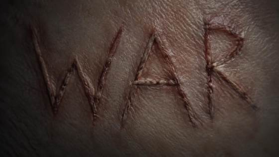
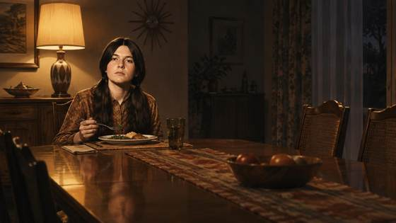
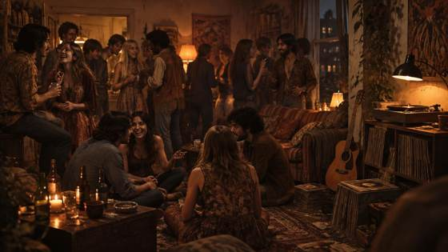
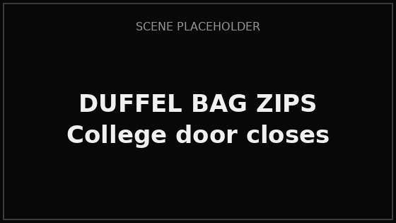
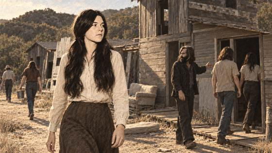
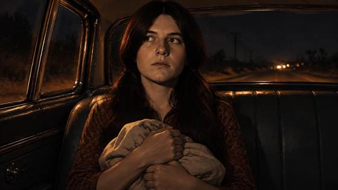
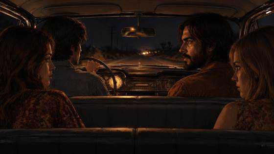
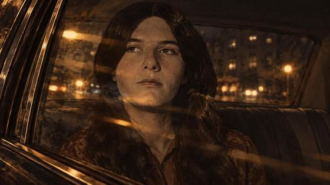
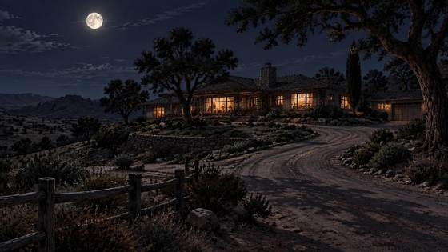
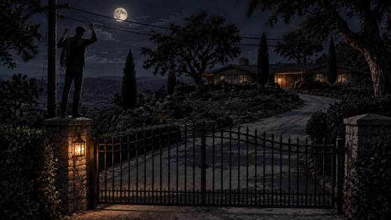
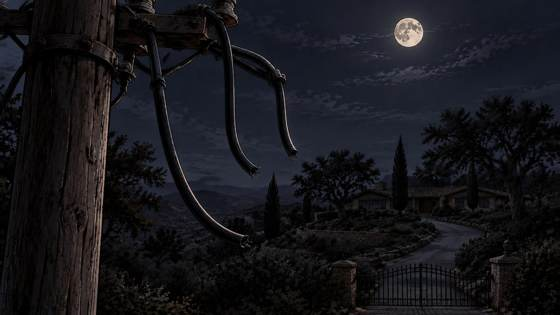
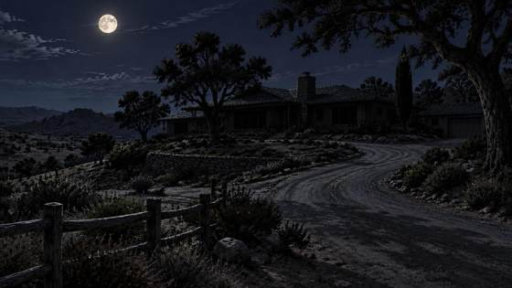
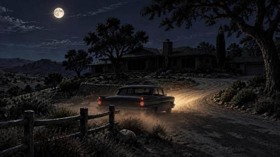
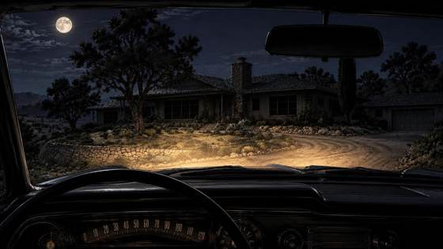
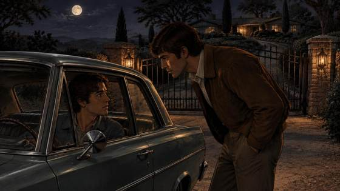
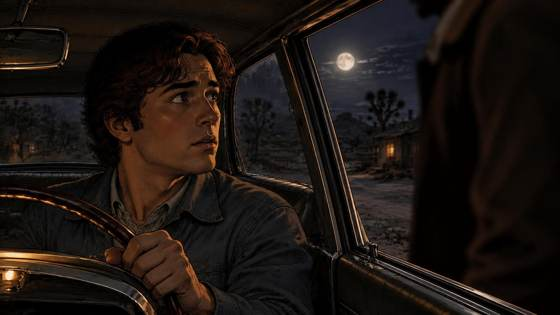
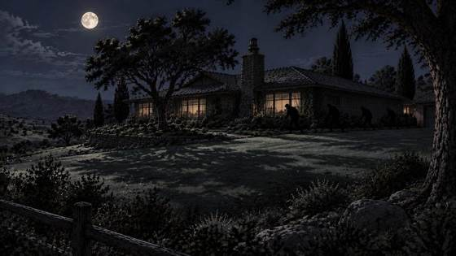
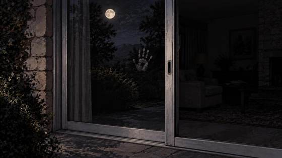
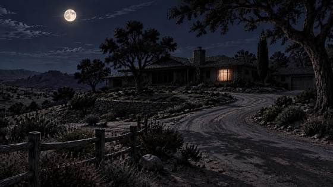
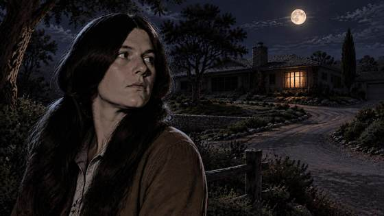
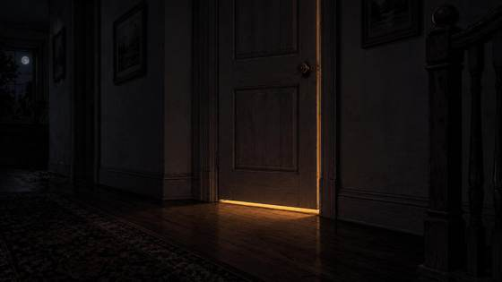
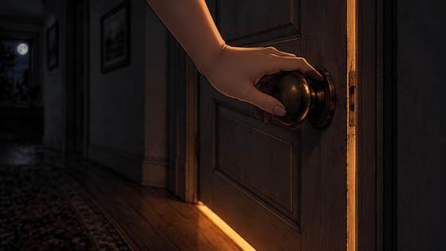
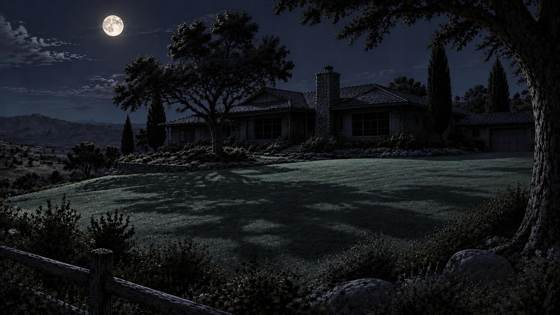
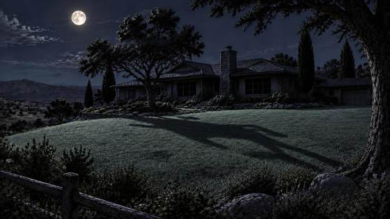
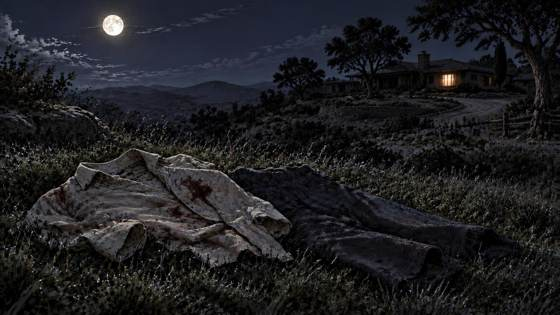
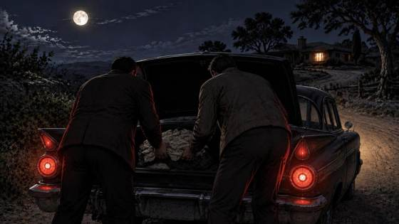
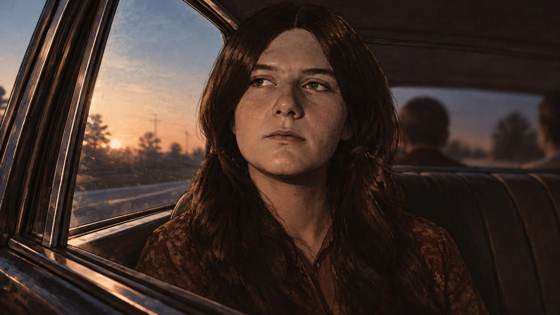
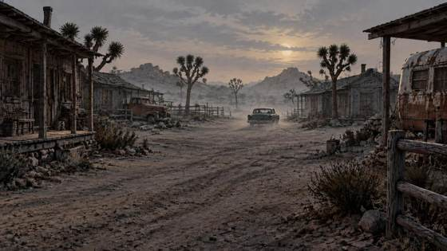
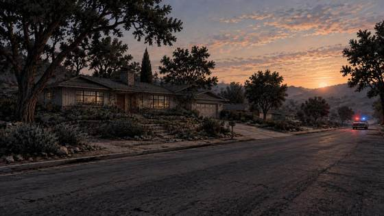
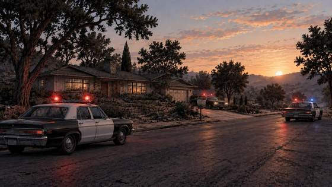
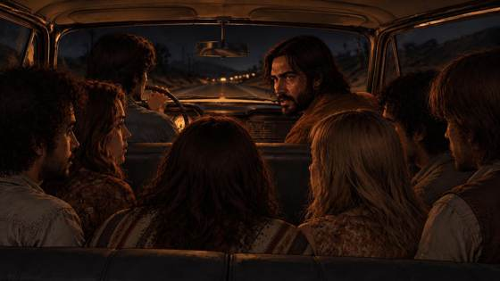
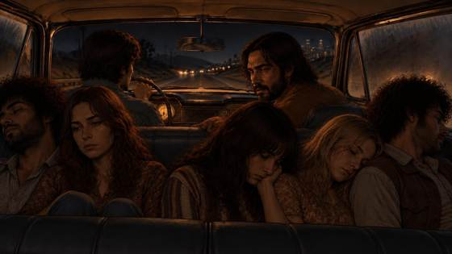
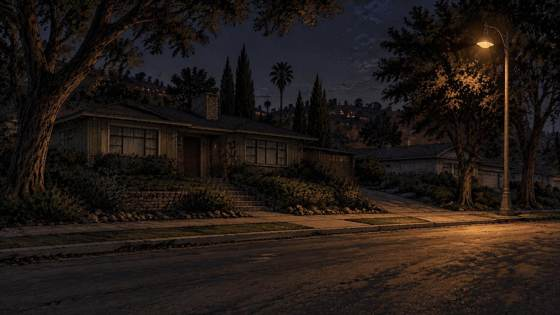
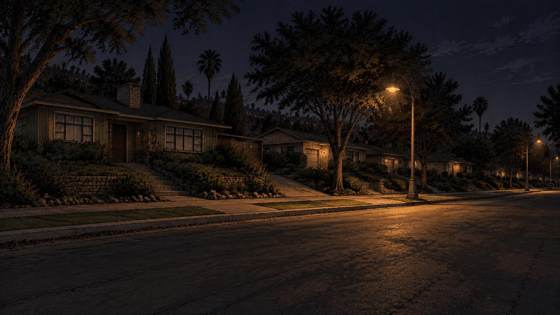
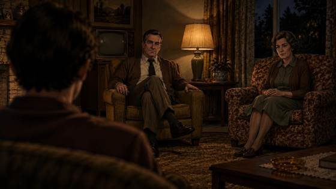
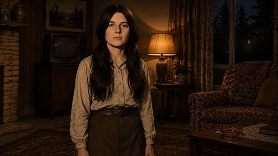
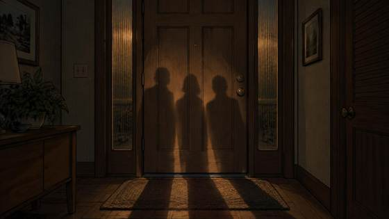
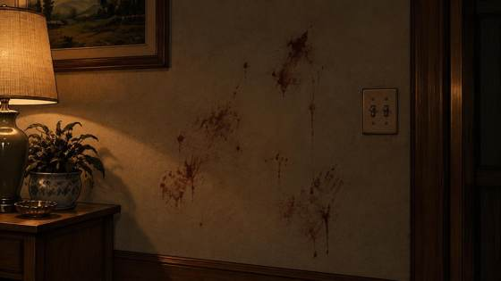
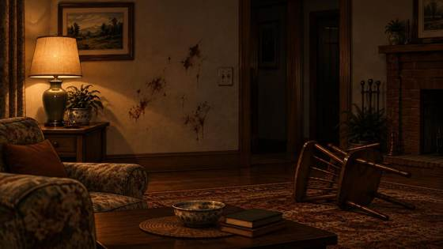
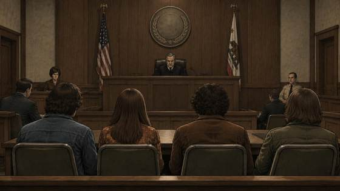
The script by itself — outline form. Edits sync with the Director view.
The full storyboard, beat by beat. Tap to enlarge; arrows step through every beat in story order.
All 66 generation prompts (54 from the pack + 12 placeholders). Edit here to request prompt changes.
The complete script as a document. Edits made in other views appear here automatically.
CHEF: Imagine it's the sixties. And you are 21 years old... and you help Charles Manson murder seven people over a weekend.
CHEF: This is Patricia Krenwinkel. She's now 78 and still sitting in prison.
CHEF: Then getting sentenced to death for it.
NOTE: replace and with then
CHEF: And spending the next fifty-five years in a prison cell.
CHEF: And then, the parole board grants your release. Three times.
CHEF: And then the governor takes it away. Twice. Number three is still in review.
CHEF: October 6th — she goes back before the parole board, and for the third time, they say yes.
CHEF: But here's what makes this case even stranger. Fifty years later, they're still fighting over one detail from those two nights — one of the most infamous images of the entire case: Who carved the word WAR into the stomach of Leno LaBianca?
CHEF: So before we get to what the parole board decided — for the third time — how did we even end up here?
CHEF: It's 1967, Los Angeles, Patricia Krenwinkel is nineteen, and she's eating dinner in a house where nobody talks. Forty-five years later she'll call it "a house where silence was golden." Patricia doesn't fit in at school, and she doesn't fit in at home, and the family is falling apart around her.
CHEF: And Patricia's got an older sister — actually she's a half-sister, she's seven years older — and the sister is absolute chaos. Drugs at fourteen. Had a kid at fifteen. And is all about that party life. But in Patricia's eyes, the sister is moving and laughing and alive, Patricia drifts toward her, because anywhere looks better than the quiet house.
CHEF: So Patricia actually decides to drop out of college and she moves into her sister's place, and the nights turn into partying and drinking and smoking that grass and hash and really whatever else is around. And years later, Patricia says it plain:
PATRICIA: I wanted to please. I wanted to be loved. I wanted for the first time to feel safe.
CHEF: And then, through her sister, Patricia meets him. Charles Manson. Thirty-three years old, with a guitar and a group of runaways who call him father.
CHEF: And Manson doesn't grab her. He collects her. There's a difference. He tells Patricia she's beautiful. He tells her she's wanted. And for a girl who's never felt safe anywhere, that's the most dangerous thing in the world.
CHEF: And the control comes slow. Love first. Then rules. Then the humiliation — small ones, in front of everybody. and by that time, it was over.
PATRICIA: I gave up every little bit of me to that man who demanded every little bit of me.
CHEF: But here's the thing — and this is the part that breaks the victim story —Manson likes control of everyone around him, especially the girls. So Patricia gets put in charge of the little kids at the ranch. And the kids talk, and the girls whisper, and Patricia's not blind, she knows what's happening to all the young girls. girls as young as thirteen and fourteen — even twelve-year-olds. And she does nothing. She calls it communal living.
CHEF: I mean, she's watching it happen and calling it communal living.
CHEF: 1969. Spahn Ranch. An old movie set outside Los Angeles, and it's theirs now.
CHEF: And the petty crimes turn into bigger crimes, and the drugs turn into weapons, and they cut off everybody who isn't family. And then Manson gives them the reason for all of it.
CHEF: So Helter Skelter — real quick — Manson's telling them the Beatles hid a prophecy in the White Album. A race war is coming. And these murders are going to light the fuse. That's the mission.
CHEF: So it's the night of August 8th, and Manson pulls Linda Kasabian aside at the ranch and tells her to get a change of clothes and her driver's license and a knife. Linda gets to the car. Susan Atkins and Patricia are already in the back seat, Tex Watson's up front, Manson's talking to him.
CHEF: They start down the driveway, Manson stops again and tells them to leave some kind of sign behind — something "witchy."
CHEF: And Tex drives, and Linda's just sitting there holding three knives and a gun, with instructions to ditch them if the police stop the car.
CHEF: Their destination is 10050 Cielo Drive. And Sharon Tate's there — she's twenty-six and pregnant — and Jay Sebring and Abigail Folger and Wojciech Frykowski are inside too.
CHEF: They reach the property. Tex cuts the overhead wires and turns the car around and parks it facing back out. The four of them get out, and Tex has rope, and instead of walking through the gate they go up the hillside and over an embankment to get onto the property.
CHEF: But before they even make it to the house, headlights start coming toward them. And it's eighteen-year-old Steven Parent, and he's been visiting the guest house and he's just trying to leave in his Rambler. And Tex walks up to the car with the gun, and Steven begs him not to hurt him, and Tex shoots him and reaches inside and shuts the ignition off.
CHEF: And Steven Parent becomes the first person killed that night. And they keep going.
CHEF: So Tex sends Linda around the back of the house to look for an open door or window, and she can't find one. She comes back. Tex is cutting a window screen, then he sends Linda back down toward the car.
CHEF: Patricia walks back over and asks Linda for her knife, and Linda gives it to her, and Patricia tells her to stay there and listen for sounds, then she heads back toward the house.
CHEF: A little later Linda hears screaming, and she starts moving up the walkway because she wants it to stop, but she never makes it to the front door. And a man comes stumbling outside with blood on his face — that's Wojciech Frykowski — and he leans against a post and falls into the bushes.
CHEF: And Susan Atkins comes out, and Linda's like, "Sadie, please make it stop." And Atkins tells her it is too late.
CHEF: Linda sees Patricia carrying a knife, chasing a woman across the lawn. It's Abigail Folger.
CHEF: Patricia drags Abigail from the bedroom into the living room. Abigail Folger suffers twenty-eight stab wounds — from more than one attacker.
CHEF: And Linda turns around and runs.
CHEF: Tex and Susan and Patricia finally come back to the car. They've got blood on their clothes, Linda's knife is gone, and part of the gun grip has broken off. They change clothes while leaving, and evidence gets discarded along the way.
CHEF: Back at Spahn Ranch, Manson's waiting, and he asks whether they feel any remorse. And they say no.
CHEF: And five people are dead — Steven Parent and Sharon Tate and Jay Sebring and Abigail Folger and Wojciech Frykowski. And somehow that still isn't the end of the weekend.
CHEF: So the next evening Manson sends them out again, and this time there are seven people in the car — Manson and Tex Watson and Susan Atkins and Patricia and Leslie Van Houten and Steve Grogan and Linda Kasabian. And Manson says the night before was too messy, and this time he's going to show them how it should be done.
CHEF: Linda actually drives at first while Manson gives directions, and they spend hours moving around Los Angeles looking at different places. Eventually they stop on Waverly Drive in Los Feliz, and Linda recognizes the house, because it belongs to Harold True, somebody the group already knew.
CHEF: Manson tells her he's going next door. And next door are Leno and Rosemary LaBianca.
CHEF: Manson goes into the LaBianca house alone, and a little later he comes back out and says the man and woman inside are tied up. Then he talks to Tex and Patricia and Leslie and tells them not to let them know they're going to kill them.
CHEF: Those three get out of the car, and Manson leaves with Linda and Susan and Grogan. Patricia stabs Rosemary LaBianca around the neck and collarbone — hard enough to bend the knife blade. She turns a carving fork on Leno LaBianca after he's dead, and joins the blood writing on the walls.
CHEF: By the time it's over, Leno and Rosemary are both dead. The house is left with messages written in blood — "Death to the Pigs" and "Rise" and the misspelled "Healter Skelter. And on Leno's stomach, three letters carved into the skin — W. A. R. Whose hand held the knife? Fifty years of hearings, and nobody agrees. Probably never will. After, Patricia changes into Rosemary LaBianca's clothes and eats food from their fridge and plays with their dogs and takes a shower. And her only complaint is that her hand hurt from the stabbings. I mean — her hand hurt. Just diabolical. And that's seven murders across two nights.
CHEF: So December 1st, 1969, two days before her twenty-second birthday, and they arrest Patricia. She gives a false name and fights being returned to California.
CHEF: The jury finds Patricia guilty of seven counts of first-degree murder and conspiracy, then they sentence her to death. At this point parole doesn't sound like it should ever enter the conversation. But then California law changes underneath the case.
CHEF: So in 1972 the California Supreme Court strikes down the death penalty framework, and Patricia's convictions don't disappear — she's not acquitted and she's not pardoned — but death becomes life with the possibility of parole. By 1977 Patricia's technically eligible to ask for release. And technically eligible doesn't mean anybody's saying yes.
CHEF: And for decades it's the same answer — no. Fourteen findings of unsuitability, and a 2002 hearing where Patricia agrees she's not suitable, and a seven-year denial in 2011.
CHEF: Meanwhile Patricia's prison record changes — decades without violence and no rules violations and college degrees and years of programs and sobriety and service work. In 2016 the board stops a hearing to investigate her abuse claims, and they come back in 2017 with a low risk assessment, and they still say no.
CHEF: The question isn't "did she do it" anymore — that was settled fifty years ago. The question is whether the seventy-eight-year-old woman in front of the board is still an unreasonable danger if she gets out.
CHEF: And then in 2022 something happens that never happened before — the board says yes. Decades without violence and programming and remorse and release plans and low risk, and how young Patricia was, and the abuse and coercion. And the board grants Patricia parole. But she doesn't get out, because Governor Newsom reverses it.
CHEF: Three years later, May 30th 2025, Patricia's seventy-seven with fifty-five years inside, and the board says yes again. And for a second time, reversed. Same crimes and same person — two board grants and two gubernatorial reversals. I mean, the board keeps saying yes and the governor keeps saying no.
CHEF: And on October 6th, 2026, they do it again — the board says yes for the third time.
CHEF: October 6th, 2026. California Institution for Women, 8:30 in the morning, Panel A, video conference. The panel grants Patricia parole — her third grant in five years. But a grant is not a release date. She's still inside.
CHEF: Now the clock runs. A hundred and twenty days of board review, then the decision lands with Governor Newsom. He reversed the last two. He's got until March 5th, 2027, to decide this one.
CHEF: So here's where it sits. Patricia Krenwinkel helped murder seven people over two nights in 1969, and she was sentenced to die for it, and she's spent more than half a century in prison and built the record we just went through, and she's convinced three separate parole panels she can safely be released. And the governor disagreed twice. Now the third grant sits with him.
CHEF: Next checkpoint: March 5th, 2027.
CHEF: CASE FILE STATUS: OPEN.
Beat-by-beat generation plan. Check off sessions as they're done.
Working method per Chef: scene in one column, generation idea next to it. Not a restart — the 52 banked images stand; this plan directs the likeness pass and the missing scenes.
| Character | Likeness source | Treatment |
|---|---|---|
| Patricia Krenwinkel | Locked animated portrait (banked) | Full-body likeness = reference for all her scenes; bg-removed pops |
| Charles Manson | character-references/manson-1968-mugshot.jpg | Generate full-body likeness first, then use as reference |
| Tex Watson | character-references/tex-watson.jpg | Same pipeline |
| Linda Kasabian | character-references/linda-kasabian.jpg | Same pipeline — she's the Part 2 witness, audience must know her face |
| Susan Atkins | character-references/susan-atkins-1971.png | Same pipeline |
| Leslie Van Houten | character-references/leslie-van-houten-young.jpg | Same pipeline |
| Sister, LaBiancas, Spahn, victims | Generated however fits | Minor/implied; victim restraint per doctrine holds |
Style rule: no single locked animation style channel-wide. Vary by story need. Every generation brief must specify expression + gesture tied to the VO beat. Imply freely within factual reason (the MacBook rule).
Legend: ✅ have it · 🔁 re-do with likeness · ➕ generate new · 🎨 existing kit
| Beat | Time | Scene (VO) | Generation idea | Asset |
|---|---|---|---|---|
| 1 | 0:00 | "Imagine it's the sixties. And you are 21…" | Full-body Patricia likeness turning to camera, searching expression; 60s LA collage behind. Split-screen candidate: real 1973 photo vs likeness (the Ray format). | 🔁 |
| 2 | 0:16 | "This is Patricia Krenwinkel. She's now 78." | BG-removed portrait pop: 78-year-old Patricia likeness (age the reference). Ray-style split-screen with real photo. | ➕ (age-up likeness) |
| 3 | 0:05 | "Then getting sentenced to death." | Courtroom: gavel mid-strike, Patricia likeness from behind at defense table, head bowed. High contrast. | 🔁 (01 is the cell; this beat wants the gavel) |
| 4 | 0:07 | "Fifty-five years in a prison cell." | Cell: small figure on bunk, light through bars, tally marks / calendar pages fluttering. Time-lapse feel. | ✅ 01-prison-cell |
| 5 | 0:10 | "The parole board grants your release. Twice." | Board table; "GRANTED" stamp slamming onto paper; older Patricia likeness looking up — disbelief cracking into hope. Text overlay "GRANTED" encouraged. | ➕ |
| 6 | 0:13 | "The governor takes it away. Twice." | A hand stamping "REVERSED" across the grant; or the governor's desk, veto pen mid-stroke. Her hope collapsing — same face as beat 5, seconds later. | ➕ |
| 7 | 0:17 | "She just went back before the parole board on October 6th." | Modern hearing room; wall calendar with OCT 6 circled in red. | ✅ 54-hearing-room 🔁 (add calendar imply) |
| 8 | 0:21 | "Who carved WAR into Leno LaBianca's stomach?" | The carving close-up; two shadowed hands reaching from opposite sides — authorship unresolved by design. Question mark as graphic, not VO. | ✅ 03-war-carving |
| 9 | 0:35 | "How did we even end up here?" | Rewind: Patricia likeness walking backward through flashes of the episode's key frames. Montage energy. | ➕ (montage edit, not a generation) |
| Beat | Time | Scene (VO) | Generation idea | Asset |
|---|---|---|---|---|
| 10 | 0:42 | Quiet house, 1967. Dinner where nobody talks. | Patricia likeness at the table, eyes down, pushing food around; parents as blurred presences. Silence as a weight. | ✅ 04 (🔁 with likeness) |
| 11 | 1:00 | The sister — chaos, party life, alive. | Sister (generated) laughing mid-party, drink raised; Patricia likeness on the frame's edge, half-smile, wanting in. | ✅ 05 (🔁 with likeness) |
| 12 | 1:16 | Drops out, moves in with sister. Partying. | Patricia likeness zipping a duffel bag; college door closing behind her; textbooks in a trash can (implied). | ➕ |
| 13 | 1:27 | "I wanted to feel safe." (doc) | Soft sketch style. Tight close-up, Patricia likeness vulnerable — the voice-crack moment. | 🎨 quote card exists; ➕ sketch portrait |
| 14 | 1:33 | "Through her sister, Patricia meets him." | Manson likeness with guitar, runaways lounging; Patricia likeness entering frame — first eye contact. Meet-cute shot as horror. | ➕ THE scene Part 1 needs |
| 15 | 1:41 | "He collects her. He tells her she's beautiful." | His hand on her shoulder; her face melting from guarded to wanted. Intimate, unsettling — the most dangerous thing in the world, played quiet. | ➕ |
| 16 | 1:54 | "Love first. Then rules. Then the humiliation." | Triptych in one frame or quick cuts: embrace → his finger pointing, her nodding → group laughing, her small. Escalation in three gestures. | ➕ |
| 17 | 2:02 | "I gave up every little bit of me." (doc) | Patricia likeness hollowed out, empty hands extended — she handed it all over and there's nothing left to hold. | ➕ |
| 18 | 2:08 | Ranch complicity — she watches, does nothing. | Porch: kids playing, girls whispering; Patricia likeness watching, face flat — she knows. Complicit stillness, no distress performed. | ➕ |
| 19 | 2:27 | "Watching it happen and calling it communal living." | Same scene pushed: her mouth forming the words, dead eyes. The lie and the face at once. | ➕ (variant of 18) |
| 20 | 2:31 | Spahn Ranch, 1969. Old movie set. | Wide establishing, golden hour, the ranch as its own character. | ✅ canonical Spahn wide |
| 21 | 2:36 | Petty crimes → bigger crimes; drugs → weapons. | Hands-only montage: shoplifting → cash → guns laid on a table → pills. Escalation without faces. | ➕ |
| 22 | 2:47 | Helter Skelter — the White Album prophecy. | Manson likeness preaching, White Album spinning on a turntable, followers' rapt faces; his finger tracing the lyrics (implied). Fire-and-brimstone staging. | ✅ 07-white-album + ➕ sermon scene |
| Beat | Time | Scene (VO) | Generation idea | Asset |
|---|---|---|---|---|
| 23 | 2:59 | August 8th. Manson pulls Linda aside; the car loads. | Manson likeness handing Linda the bundle at the ranch; car behind with figures loading — Tex up front, two girls in back. The mission brief as a visual. | ✅ 08, 12 🔁 (with likenesses) |
| 24 | 3:19 | Leave "something witchy" behind. | Manson likeness gesturing back at the ranch, sly grin; a strange trinket on the porch rail (implied). Mischief as menace. | ✅ 09, 10 |
| 25 | 3:28 | Linda holding three knives and a gun. | Linda likeness in the back seat clutching the bundle, knuckles white, eyes darting to the window. Dread in a close-up. | ✅ 11-knives-on-seat 🔁 (her face) |
| 26 | 3:36 | 10050 Cielo Drive. Four people inside. | Establishing (have it); warm windows with four soft silhouettes inside — people, not props. Peaceful before. | ✅ 13, 14 |
| 27 | 3:46 | Tex cuts the wires; car turned to face out. | Tex likeness on the pole, wire cutters, focused expression; below, the car's headlights-off turnaround. Methodical. | ✅ 15, 16, 17 |
| 28 | 4:04 | Headlights — Steven Parent in his Rambler. | Headlights flaring huge; Tex likeness approaching with the gun; Parent's terrified face through the windshield — brief, humanizing. | ✅ 18, 19 🔁 (Tex likeness) |
| 29 | 4:26 | Steven Parent becomes the first killed. | The shot implied, not shown: muzzle flash lighting all faces for one frame; Parent slumping. Sound does the work. | ✅ 20, 21 |
| 30 | 4:30 | Linda sent around back; Tex cuts the screen. | Linda likeness creeping along the house wall, testing windows, breath held. (Have the location; add her face.) | ✅ 22, 23 🔁 |
| 31 | 4:45 | "Her knife" — Patricia asks Linda, heads back. | THE handoff: Linda likeness placing the knife in Patricia's hand, eyes meeting; Patricia's face shifts — the decision made. Quietest, heaviest beat of the night. | ✅ canonical handoff 🔁 (likenesses); ⚠️ 24 deferred — 46-alt treatment if retried |
| 32 | 4:57 | Screaming. Frykowski stumbles out, bloody. | Frykowski lurching from the doorway, blood on face, collapsing into bushes; Linda likeness frozen mid-step on the walkway. | ✅ 25, 26 |
| 33 | 5:16 | "Sadie, please make it stop." — "Too late." | Two-shot: Linda likeness grabbing Atkins' arm, pleading; Atkins likeness cold, flat — "too late." The moral split in one frame. | ✅ 27, 28 + ➕ the two-shot |
| 34 | 5:23 | Patricia chases Folger across the lawn, knife. | Full sprint: Patricia likeness mid-stride, knife glinting; Folger ahead, terrified. Motion-blur energy. | ✅ canonical chase 🔁 |
| 35 | 5:28 | Dragged bedroom → living room. 28 wounds, multiple attackers. | Implied: Folger's hand gripping the doorframe, Patricia likeness pulling; text overlay "28" — the number does the telling, never the act. | ✅ 31, 32 |
| 36 | 5:35 | Linda turns and runs. | Linda likeness sprinting down the driveway, looking back once — the one who runs. | ✅ 31-linda-running 🔁 |
| 37 | 5:37 | Bloody clothes; knife gone; gun grip broken. | Car interior: quick changes, bloody bundle shoved in a bag; broken gun-grip close-up as insert. Evidence, not gore. | ✅ 33, 34 |
| 38 | 5:52 | "Remorse?" — "No." | Manson likeness asking; the three likenesses flat-faced: "no." Deadpan two-shot. The chill is in how little their faces move. | ✅ 35-ride-back 🔁 |
| 39 | 5:59 | Five dead. | Five empty chairs at a table — or five candles blown out, smoke curling. Then dawn crime scene. Restraint. | ✅ 37, 38 |
| Beat | Time | Scene (VO) | Generation idea | Asset |
|---|---|---|---|---|
| 40 | 6:09 | Night two. Seven in the car. "Too messy." | Seven likenesses crammed in; Manson likeness mid-brief, finger raised: this time he shows them how. | ✅ 39-crowded-car 🔁 (likenesses; note 8-heads flag) |
| 41 | 6:29 | Hours driving LA. Waverly Drive. | Linda driving, Manson directing from passenger seat, city lights smearing past; then the Waverly house, asleep. | ✅ 40, 41, 42 |
| 42 | 6:45 | "Next door." The LaBiancas. | Manson likeness pointing past True's house: "next door." The LaBianca house warm, unaware — dramatic irony in one frame. | ✅ 43 |
| 43 | 6:50 | Manson goes in alone; ties them up. | Rope close-up (have it); Manson likeness emerging into porch light: "they're tied up." Then the briefing — finger to lips. | ✅ 44, 45 |
| 44 | 7:06 | Three get out. The stabbings; the fork; the writing. | Trio up the path (canonical); Patricia likeness resolved — jaw set. Rosemary's terror, brief and humanizing. Bent-knife insert. | ✅ 46-alt + canonical trio; ⚠️ 49 softened — retry as object-only or accept |
| 45 | 7:24 | Blood writings; WAR; the diabolical aftermath. | The wall (have it, illegible by design); then the domestic horror: Patricia likeness in Rosemary's clothes, eating from the fridge, dogs at her feet — and her hand, flexing, aching. | ✅ 47, 48, 50 + ➕ aftermath scene |
| Beat | Time | Scene (VO) | Generation idea | Asset |
|---|---|---|---|---|
| 46 | 8:01 | Arrested Dec 1, 1969. False name; fights extradition. | Aug 16 raid as the visual (have the wiki detail): helicopters over the ranch, cops swarming, Patricia likeness's face as the cuffs click. No identifiable mugshot needed. | ➕ (51 declined — this replaces it) |
| 47 | 8:10 | Guilty on seven counts + conspiracy. Death. | Courtroom: the sentence read; Patricia likeness doodling devils in the margin (wiki detail!); the X carved on foreheads — defendants' row, all marked. | ✅ 52-courtroom + ➕ X-forehead/doodle inserts |
| 48 | 8:24 | 1972: death penalty struck down. Eligible '77. | Newspaper headline "DEATH PENALTY STRUCK DOWN"; cell door — death becomes life. Calendar pages tearing to 1977. | ➕ |
| Beat | Time | Scene (VO) | Generation idea | Asset |
|---|---|---|---|---|
| 49 | 8:42 | Decades of no. Fourteen findings; 2011 seven-year denial. | The word "NO" stamped across the years — 1978, 1985, 2002, 2011 — Patricia likeness aging under each stamp. Time as punishment. | ➕ |
| 50 | 8:52 | The record changes: no violence, degrees, programs, sobriety. | Montage: diploma in hand, AA chip, teaching a prisoner to read, guitar, volleyball. Her face softening across decades. The case for her, told in objects. | ➕ (or 🎨 case-file kit) |
| 51 | 9:10 | "Is the 78-year-old woman still an unreasonable danger?" | 78-year-old Patricia likeness across the table from the board; the question as on-screen text. Stillness. Let the audience sit in it. | ➕ (age-up likeness) |
| 52 | 9:22 | 2022: yes — then Newsom reverses. | "GRANTED" stamp; her hands covering her face — overwhelmed. Then the reversal: the stamp crossed out, her face falling. Same two beats as cold open 5–6, now earned. | ➕ THE emotional climax — pair with beats 5–6 |
| 53 | 9:40 | 2025: yes again — reversed again. | Same grammar, older, wearier. The second fall lands harder because hope is thinner now. Don't repeat the exact frames — ache, not echo. | ➕ |
| 54 | 9:57 | "And now we're doing it again." | Calendar tearing to October 2026; Patricia likeness bracing — shoulders squaring, breath in. | ➕ |
| Beat | Time | Scene (VO) | Generation idea | Asset |
|---|---|---|---|---|
| 55 | 9:59 | Hearing Oct 6, 2026 — a hearing, not a release. | Modern hearing room; on-screen text treatment: "A HEARING — NOT A RELEASE." The distinction as a graphic. | ✅ 54-hearing-room |
| 56 | 10:11 | If no, she stays. If yes, review + governor again. | Split screen: two doors — one stays shut; one opens onto a long hallway (the review process stretching out). | ➕ |
| 57 | 10:25 | Where it sits — the full summary. | Case file on the desk; key frames flashing over it as the VO recaps. Montage edit. | ✅ canonical case-open |
| 58 | 10:47 | Next checkpoint: October 6. | Calendar page: OCTOBER 6 circled; a clock ticking. Finality. | ➕ |
| 59 | 10:48 | CASE FILE STATUS: OPEN. | The open file; the stamp coming down: "OPEN." Hold on it. End card energy. | ✅ canonical case-open 🎨 |
Total proposed new: ~33 images ≈ 530 tokens. Balance: 103,502.
Full inventory, character gaps, and prioritized new assets. Check off decisions as they're made.
Built from the v8 script (59 beats), the 52 banked Leonardo images (Sessions A–E), the 48 canonical images in scenes/, and the existing case-file / quote-card / chapter-graphic kits (unchanged).
| Kit | Count | Location | Status |
|---|---|---|---|
| Leonardo reenactment images | 52 | ep002_review/leonardo-session-{a,b,c,d,e}/ | QA-passed, style-locked |
| Canonical images (earlier batch) | 48 | ep002_review/scenes/ | In use (first meeting, knife handoff, chase, seven-in-car, trio approach, arrest, prison decades, Spahn wide, night departure, case open, Patricia portrait, etc.) |
| Case-file document kit | — | existing | Unchanged — Chef: "really good as is" |
| Quote cards | — | existing | Unchanged |
| Chapter graphics | — | existing | Unchanged |
| Background plates (4-plate kit) | 4 | existing | Talking-head + flat-lay spreads |
The episode has atmosphere but is missing its people. Only one character has a locked face.
| Character | Role in script | Current visuals | Identity established? |
|---|---|---|---|
| Patricia Krenwinkel | Protagonist | 6 scenes (4, 10, 26, 35, 46-alt + canonical portrait) | ✅ Face locked |
| Charles Manson | Co-lead of Part 1, drives both nights | 39, 41 (bearded passenger, no anchor) | ❌ No portrait, no confirmed anchor |
| Tex Watson | Trigger-puller, both nights | Crowd scenes only | ❌ No distinct identity |
| Susan Atkins | Night 1 + 2 | Crowd scenes only | ❌ No distinct identity |
| Linda Kasabian | Part 2 narrative witness | Anonymous / from behind (12, 31) | ❌ No face |
| Leslie Van Houten | Night 2 | Absent | ❌ |
| Steve "Clem" Grogan | Night 2 | Absent | ❌ |
| Abigail Folger | Victim, chase/drag | Pursued figure only, no face | ⚠️ Intentionally faceless |
| Sharon Tate | Victim | Absent | ⚠️ Absent by restraint |
| Jay Sebring | Victim | Absent | ⚠️ Absent by restraint |
| Wojciech Frykowski | Victim | Stumbling figure (29/30) | ⚠️ Partial, by restraint |
| Steven Parent | Victim | Implied (18-headlights) | ⚠️ Implied, by restraint |
| Leno & Rosemary LaBianca | Victims | One calm scene (45) | ✅ As far as the rules allow |
| Patricia's sister | Part 1 catalyst | Party scene only (05) | ⚠️ One scene |
Victim restraint is by doctrine ("victims are never props") — not a gap to fill. The gap is the perpetrators: Manson, Tex, Susan, Linda, Leslie have no faces, so Part 1's grooming arc and both nights play out with anonymous figures.
| Episode section | Dramatic scenes | Visual status |
|---|---|---|
| Cold open (beats 1–9) | Prison / hearing / WAR carving | ✅ Covered (01, 02, 03 + portrait) |
| Part 1 (beats 10–22) | Quiet house, sister, dropout, meets Manson, collects her, control, ranch complicity, Helter Skelter sermon | ⚠️ Mood shots only. The grooming arc (beats 14–16) has NO played scene. Ranch complicity (18) and the sermon (22) have no scene — just campfire + album. |
| Part 2 (beats 23–39) | Car loading, knives, Cielo approach, wires, Parent, knife handoff, screaming, chase, drag, bloody clothes, no remorse | ✅ Strongest section — full approach sequence; killings off-frame by design |
| Part 3 (beats 40–45) | Seven in car, Waverly, rope, LaBiancas, blood writing | ✅ Full sequence; violence restrained by design |
| Part 4 (beats 46–48) | Arrest, death sentence, 1972 | ❌ Arrest has NO visual (51 declined). Courtroom ✅ (52). 1972 ❌ |
| Part 5 (beats 49–54) | Decades of no, record changes, 2022 grant→reversal, 2025 grant→reversal | ❌ Only the prison yard (53). The parole grant/reversal drama — the emotional climax of the episode — has ZERO visuals. |
| Part 6 (beats 55–59) | Hearing 10/6, if yes/if no, where it sits, checkpoint, case open | ⚠️ Hearing room ✅ (54); outro beats thin |
Hard constraint: the agent will not depict portrait-identified Patricia in accused-criminal contexts (declined: 24, 46-knife, 51-mugshot). All new Patricia prompts keep her unarmed and neutral.
~16 tokens/image × 15 ≈ 240 tokens — negligible against the 103,502 balance.
Beat coverage map and review decisions. Check off decisions as they're made.
Purpose: map the 52 Leonardo images banked overnight (Sessions A–E) against the script beats, so the review pass can focus on the gaps and three policy-decline decisions instead of re-checking every frame.
Numbering note: beat numbers follow the prompt pack (leonardo-full-episode-prompts.md, 58 beats). The v8 tightened script has 59 beats (one beat added in the tighten) — reconcile during the edit pass; no beat lost coverage by it.
Token tally: 104,304 → 103,502 = 802 tokens spent, 103,502 remaining. No further spend until the review decisions below are settled.
The agent's rule is consistent: portrait-identified Patricia is approved in neutral/unarmed scenes (4, 10, 26, 35, 46-alt — face holds, consistent) and declined in accused-criminal contexts:
| Image | Status | Detail |
|---|---|---|
| 24 (Patricia + knife at Cielo) | DECLINED, deferred | Chef's hypothesis: the attached reference may be the realistic B&W portrait (agent reads a real person → stricter rules); Oct 11 knife tests passed with no portrait attached. Revisit plan: confirm which portrait is pinned in the agent session; if realistic, swap in the animated portrait and retry once. |
| 46 (Patricia + knife, Waverly) | DECLINED → ALT PASS | Agent generated its own unarmed alternative (46-rosemary-neutral-alt.jpg) — face matched, heavy stillness. This IS the recommended treatment, already banked. |
| 49 (bent knife) | SOFTENED | Agent rendered a disordered room (overturned chair), no knife, no blood. The bent-knife evidence beat currently has no image. |
| 51 (mugshot) | DECLINED, definitive | "Can't create an identifiable mugshot of Patricia in connection with these crimes." Offered an anonymous fictionalized booking portrait (skipped per instructions). Treat as final — don't retry. |
✅ covered · ❌ no AI image (see decision section) · ⚠️ declined/softened
| Beat | Section | Coverage |
|---|---|---|
| 1 | Cold open — 21 | ✅ canonical Patricia portrait (already done) |
| 2 | Cold open — sentenced | ✅ 01-prison-cell |
| 3 | Cold open — 55 years | ✅ 02-parole-hearing-room |
| 4 | Cold open — granted twice | ✅ 02-parole-hearing-room |
| 5 | Cold open — taken away twice | ❌ |
| 6 | Cold open — this is Patricia | ❌ (canonical portrait is the natural visual) |
| 7 | Cold open — who carved WAR | ✅ 03-war-carving (authorship unresolved, per rule) |
| 8 | Cold open — how did we end up here | ❌ |
| 9 | P1 — quiet house | ✅ 04-quiet-house-patricia |
| 10 | P1 — sister | ✅ 05-sisters-party |
| 11 | P1 — drops out | ❌ |
| 12 | P1 — want to feel safe | ❌ |
| 13 | P1 — she meets him | ✅ canonical first meeting |
| 14 | P1 — collects her | ❌ |
| 15 | P1 — control comes slow | ❌ |
| 16 | P1 — every little bit of me | ❌ |
| 17 | P1 — breaks victim story | ✅ 06-ranch-campfire |
| 18 | P1 — watching it happen | ✅ 06-ranch-campfire |
| 19 | P1 — Spahn 1969 | ✅ canonical Spahn wide |
| 20 | P1 — bigger crimes | ❌ |
| 21 | P1 — Helter Skelter | ✅ 07-white-album |
| 22 | P2 — Aug 8th | ✅ 08-ranch-quiet-before + canonical night departure |
| 23 | P2 — something witchy | ✅ 09-car-interior-tense, 10-patricia-window |
| 24 | P2 — Linda's knives | ✅ 11-knives-on-seat, 12-linda-bundle |
| 25 | P2 — Cielo Drive | ✅ 13-cielo-establishing, 14-gated-driveway |
| 26 | P2 — cut wires | ✅ 15-wire-cutting, 16-severed-wires, 17-house-gone-dark |
| 27 | P2 — headlights | ✅ 18-headlights, 19-approach-pov |
| 28 | P2 — first killed | ✅ 20-gate-stop, 21-parents-fear |
| 29 | P2 — around back | ✅ 22-around-back, 23-glass-door |
| 30 | P2 — her knife | ✅ canonical knife handoff · ⚠️ 24 deferred |
| 31 | P2 — screaming | ✅ 25-lit-window, 26-patricia-listening |
| 32 | P2 — make it stop | ✅ 27-bedroom-door, 28-hand-on-door |
| 33 | P2 — the chase | ✅ canonical chase + 29-lawn-before, 30-pursuer-shadow |
| 34 | P2 — dragged | ✅ 31-linda-running, 32-empty-road |
| 35 | P2 — Linda runs | ✅ 31-linda-running, 32-empty-road |
| 36 | P2 — bloody clothes | ✅ 33-bloodied-clothes, 34-trunk-at-night |
| 37 | P2 — remorse? no | ✅ 35-ride-back, 36-ranch-at-dawn |
| 38 | P2 — five dead | ✅ 37-dawn-after, 38-crime-scene-dawn |
| 39 | P3 — night two | ✅ 39-crowded-car (8 heads vs 7 — decide keep) + canonical seven in car |
| 40 | P3 — hours driving | ✅ 40-night-highway, 41-long-drive |
| 41 | P3 — next door | ✅ 42-waverly-house, 43-waverly-street |
| 42 | P3 — tied up | ✅ 44-rope-closeup, 45-living-room-tense |
| 43 | P3 — three get out | ✅ 46-rosemary-neutral-alt + canonical trio approach |
| 44 | P3 — blood writings | ✅ 47-front-door, 48-blood-wall, 49-bent-knife (softened — no knife), 50-writing-wide |
| 45 | P4 — arrested | ✅ canonical arrest |
| 46 | P4 — death sentence | ✅ 52-courtroom · ⚠️ 51 mugshot declined (no image) |
| 47 | P4 — 1972 | ❌ |
| 48 | P5 — decades of no | ✅ canonical prison decades + 53-prison-yard |
| 49 | P5 — record changes | ✅ 53-prison-yard |
| 50 | P5 — question moves | ❌ |
| 51 | P5 — 2022 grant reversed | ❌ |
| 52 | P5 — 2025 grant reversed | ❌ |
| 53 | P5 — doing it again | ❌ |
| 54 | P6 — hearing, not release | ✅ 54-hearing-room |
| 55 | P6 — if yes, if no | ❌ |
| 56 | P6 — where it sits | ❌ |
| 57 | P6 — next checkpoint | ❌ |
| 58 | P6 — case file open | ✅ canonical case open |